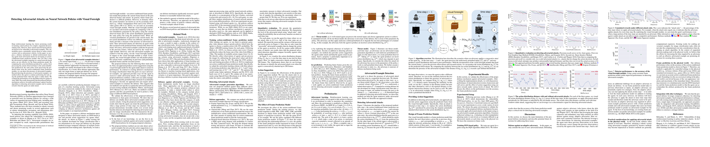

Neural Network Policies with Visual Foresight
Yen-Chen Lin Ming-Yu Liu Min Sun Jia-Bin Huang
|
|
Abstract
|
We propose a defense mechanism to defend reinforcement learning agents from adversarial example attacks by leveraging temporal information, which is not available in image classification setting.
Specifically, we use an action-conditioned frame prediction module to protect our agents. Our core idea is that the adversarial examples targeting at a neural network-based policy are not effective for the frame prediction model.
By comparing the action distribution produced by a policy from processing the current observed frame to the action distribution produced by the same policy from processing the predicted frame from the action-conditioned frame prediction module, we can detect the presence of adversarial examples.
Beyond detecting the presences of adversarial examples, our method allows the agent to continue performing the task using the predicted frame when the agent is under attack.
We evaluate the performance of our algorithm using five games in Atari 2600. Our results demonstrate that the proposed defense mechanism achieves favorable performance against baseline algorithms in detecting adversarial examples and in earning rewards when the agents are under attack.
|
|  |
| Download Paper |